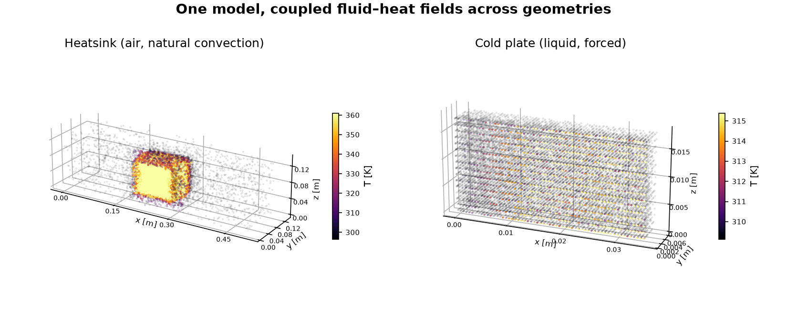
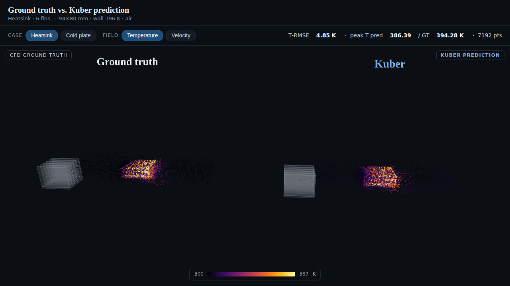

Conjugate heat transfer (CHT) — the coupled transport of heat through a solid conductor and a surrounding moving fluid — governs the thermal design of heatsinks, cold plates, heat exchangers, power electronics, and battery packs. High-fidelity CFD resolves these fields but costs minutes to hours per geometry, which is prohibitive inside a design loop. We present Kuber, an open framework for building neural surrogates of CHT, and SurfaceGeoTransolver, a geometry-general model that predicts the full steady field (U, T, p) at an arbitrary query point cloud in a sub-second. The model couples a physics-attention transformer core with a surface-geometry encoder, so it ingests raw boundary geometry (a surface point cloud with normals) and requires no analytic signed-distance field, and it is conditioned on the full set of physical scalars (fluid properties, boundary conditions, inlet velocity) plus a device-class flag. On the public SIMSHIFT heatsink benchmark it attains 12.14 K temperature RMSE on the medium out-of-distribution split, improving on the best previously published result (12.41 K) while using no unsupervised domain adaptation, which every reported baseline relies on. A single set of weights spans two physically distinct device classes — buoyancy-driven heatsinks in air and forced-convection liquid cold plates — and we show that pretraining on a self-generated OpenFOAM corpus lowers out-of-distribution error further. We additionally verify numerical soundness: the predicted temperature gradient never exceeds the physical gradient at fin tips and corners (explosion fraction zero, no NaN/Inf). All results are reproducible with the released code and data.
Thermal design is an inner loop. An engineer proposes a geometry — a fin array, a cold-plate channel layout — and must know the resulting temperature and flow field before iterating. The field is produced by solving the coupled Navier–Stokes and energy equations across a solid and a fluid region: conjugate heat transfer (CHT). Finite-volume CFD solves this accurately but slowly; in our measurements a single steady case takes a median of 22 minutes and up to nearly two hours for fine geometries. Sweeping thousands of designs, or closing an optimization loop, is therefore dominated by solver cost.
Neural surrogates promise to amortize this cost: learn the geometry-to-field map once, then evaluate it in milliseconds. Recent operator-learning and transformer methods have made this practical for external aerodynamics, but electronics-cooling CHT has received far less attention, has no widely used open benchmark harness, and no shared, license-clean data-generation recipe. Two requirements make the problem hard. First, geometry generality: a useful surrogate must accept arbitrary CAD, not a fixed parametric family, which rules out geometry encodings that presuppose an analytic shape. Second, generalization: the surrogate must predict geometries it never saw in training, because the point of a design tool is to explore new shapes.
We make three contributions. (i) SurfaceGeoTransolver, a surface-conditioned physics transformer that predicts the full 5-channel CHT field at any query point from raw boundary geometry and physical conditioning, reaching state of the art on a public benchmark without the domain adaptation prior work relied on. (ii) A reproducible data engine that generates a self-labeled OpenFOAM CHT corpus spanning multiple fluids, regimes, shapes, and two device classes, with a convergence gate and a verified mesh-convergence protocol. (iii) An honest evaluation harness — per-field normalized error, near-wall fidelity, a numerical no-explosion proof, and a value-of-data ablation — together with released code, data samples, machine-readable results, and an interactive ground-truth-vs-prediction viewer.

Neural operators. DeepONet [7] and the Fourier Neural Operator [6] established learning maps between function spaces; GINO [8] extended operator learning to large 3D geometries via a graph/Fourier hybrid. These methods are strong on structured or fixed domains but do not natively consume arbitrary boundary geometry with per-node queries.
Transformer PDE solvers. Transolver [3] introduced physics attention over learned slices, giving linear-cost attention on general meshes. Universal Physics Transformers (UPT) [4] and the anchored/branched variant (AB-UPT) [5] scale transformer surrogates to industrial CFD with supernode/anchor tokenization and surface-geometry branches. Our core builds on the GeoTransolver implementation in NVIDIA PhysicsNeMo [10]; our contribution is the surface-conditioning branch and the CHT-specific conditioning and training recipe.
Geometry representations. Signed-distance fields are a data-efficient geometry signal when an analytic shape exists, but no analytic SDF exists for arbitrary CAD. Following the surface-branch idea in AB-UPT [5], we encode the boundary directly as a point cloud with normals, which makes the model applicable to arbitrary meshes.
Spectral fidelity. One-shot regression is spectrally biased and over-smooths steep features. PDE-Refiner [9] restores high-frequency content through a denoising refinement schedule; we adopt it as an optional head and, separately, measure edge-gradient fidelity directly.
Benchmarks. SIMSHIFT [2] is a public benchmark for distribution shift in engineering simulation whose heatsink task defines train/test splits by fin count; we use it as our primary, externally comparable evaluation.
A CHT case consists of a solid conductor with boundary surface Γ immersed in a fluid domain Ω. Given the boundary geometry and a set of operating conditions, we seek the steady field at any query point x ∈ Ω:
fθ : ( x, Γ, c ) ↦ ( Ux, Uy, Uz, T, prgh ),
where U is velocity, T temperature, and prgh the reduced pressure p−ρgh. The conditioning vector c collects fluid properties (Prandtl number, density, specific heat, dynamic viscosity), boundary conditions (a wall temperature for heatsinks or a heat flux for cold plates, and the ambient/inlet temperature), inlet velocity, and a binary device-class flag. The boundary Γ is presented as a set of surface points with outward unit normals, sampled with density proportional to face area. This formulation is geometry-general: nothing in the input assumes a parametric shape family.
The model has three parts. A surface encoder maps the boundary point cloud with normals to a set of permutation-invariant geometry tokens through a shallow self-attention stack. A local cross-attention module then produces, for every query node, a geometry descriptor by attending over its k nearest surface tokens (k=16), so each query carries a local view of the nearby boundary. This descriptor is concatenated with the broadcast conditioning vector to form the per-node input embedding. The core is a GeoTransolver physics-attention transformer (256 hidden units, 12 layers, 8 heads, 64 physics slices, with multiscale local ball-query features), which reads the query point cloud together with the embedding and regresses the five z-normalized target channels. The full model has approximately 14.3 M parameters. An optional PDE-Refiner [9] head can replace one-shot regression with a denoising refinement schedule for high-frequency fidelity and an uncertainty estimate; the results below use the one-shot model.
Geometry can alternatively be supplied as a scalar or directional signed-distance field for parametric families where one is cheaply available; these remain configuration options in the released code, but the surface-encoder configuration is the one we report because it is the only one that applies to arbitrary CAD.
We generate CHT data with OpenFOAM's steady buoyant solver (buoyantSimpleFoam) over a
single fluid region, treating the solid as a heated wall (heatsinks) or a heat-flux surface (cold
plates). A parametric generator samples geometry and operating conditions; the geometry is meshed
with blockMesh and snappyHexMesh plus prism boundary layers, solved, and
exported to a per-case point cloud of 16,384 fluid nodes carrying the five field channels, the
boundary surface cloud with normals, and a JSON of conditions. The pipeline is fully resumable and is
gated: a case is written only after a converged solve, and a physics filter rejects unphysical
results. Geometry and condition sampling are seeded, so the corpus regenerates deterministically. The
corpus is entirely self-generated; it contains no cases from SIMSHIFT or any licensed source.
| Axis | Coverage |
|---|---|
| Fluids | air, water, oil (Pr≈292), glycol |
| Regimes | natural + forced convection |
| Shapes | fins, plate, cube, pin-fin; duct channels |
| Devices | heatsink (wall-T), cold plate (heat-flux) |
| Fidelity | ≈1.4 M cells/case → 16,384 nodes |
Benchmark. Our primary, externally comparable evaluation is the SIMSHIFT [2] heatsink task at medium difficulty: the model trains on fin counts 5–8 and is tested on the shifted target domain of fin counts 10–12, which never appear in training. We train from scratch on the benchmark's 222 training cases. All normalizers are fit on the source training split only.
Metrics. We report per-field root-mean-square error in physical units and normalized RMSE (nRMSE, RMSE in the per-channel z-normalized space); the benchmark's primary selector is the mean nRMSE across the five fields. For fidelity we additionally report near-wall temperature RMSE (over the 15% of nodes nearest the solid) and edge temperature-gradient ratios (Section 6.4). No baseline uses unsupervised domain adaptation (UDA) in our runs; the published baselines we compare against do, which is their best case.
Training. We use Adam [11] with a warmup–stable–decay schedule, z-scored targets, and a per-case normalized coordinate frame. Baseline numbers are quoted verbatim from the SIMSHIFT paper's Table 2.
On temperature — the design-critical field — SurfaceGeoTransolver improves on the best previously published result while using no UDA (Table 2). The paper reports only temperature and velocity RMSE on the target domain, so those are the only head-to-head columns available; the parameter counts of the baselines are not published, but their released configurations are all comparably sized (~10–15 M), so the improvement is not attributable to scale.
| Model | UDA | Temp RMSE (K) | Vel. RMSE (m/s) |
|---|---|---|---|
| SurfaceGeoTransolver (ours) | ✗ | 12.14 | 0.044 |
| UPT (prev. best) [4] | ✓ | 12.41 | 0.039 |
| Transolver [3] | ✓ | 13.43 | 0.041 |
| PointNet [1] | ✓ | 17.43 | 0.044 |
The benchmark number is itself an out-of-distribution result. Table 3 separates in-distribution (source) accuracy from the shifted target: in-distribution temperature error is 4.29 K, rising to 12.14 K zero-shot on unseen fin counts.
| Domain | T (K) | Vel. (m/s) | prgh (Pa) | mean nRMSE |
|---|---|---|---|---|
| source (in-dist.) | 4.29 | 0.025 | 203 | 0.287 |
| target (OOD) | 12.14 | 0.044 | 2303 | 0.671 |
A single set of weights, distinguished only by the device flag and fluid/BC conditioning, spans two physically distinct regimes: a wall-temperature, buoyancy-driven heatsink in air and a heat-flux, forced-liquid cold plate. Evaluated per class on held-out cases from our corpus (there is no public cold-plate CHT benchmark), the model reaches the errors in Table 4. The cold-plate mean nRMSE (0.028) is close to the in-distribution value, i.e. it generalizes to held-out cold plates with almost no degradation. These numbers are on our own corpus and are not comparable to the SIMSHIFT numbers above.
| Held-out class | T RMSE (K) | T nRMSE | mean nRMSE |
|---|---|---|---|
| cold plates | 3.11 | 0.039 | 0.028 |
| heatsinks | 5.13 | 0.065 | 0.145 |
| in-distribution (both) | 1.72 | 0.022 | 0.027 |

Does pretraining on the corpus help beyond the benchmark's own training set? We run a controlled A/B with the same model and the same SIMSHIFT fine-tuning, changing only whether the weights are initialized from scratch or from corpus pretraining (Table 5). Pretraining helps materially at the easy shift (−19%) and in-distribution (−12%), modestly at medium, and is neutral at the hardest shift, which the corpus does not yet cover. Mean nRMSE improves at every level. This is direct evidence that the self-generated data adds value: the only changed ingredient is the corpus.
| Shift | from scratch | pretrained | Δ |
|---|---|---|---|
| easy | 8.99 | 7.28 | −19% |
| medium | 12.94 | 12.38 | −4.3% |
| hard | 14.42 | 14.43 | ±0 |
| in-dist. | 4.63 | 4.09 | −12% |
A deployable surrogate must reproduce steep near-wall gradients without over-smoothing or emitting unphysical spikes. We measure the ratio of predicted to CFD temperature-gradient magnitude in the edge/near-wall band and at the steepest peaks (Table 6). Every ratio is at or below unity, in and out of distribution — the surrogate never produces a steeper-than-physical gradient, so gradient explosion is ruled out by measurement — with an explosion fraction of exactly zero and no NaN or Inf anywhere in the field. The model is not merely over-smoothing: the in-distribution edge ratio (0.97 ≈ 1.0) reproduces the true edge structure, while out of distribution it errs slightly conservative, which is the safe direction.
| Metric | in-dist. | OOD |
|---|---|---|
| edge-band ∇T ratio | 0.969 | 0.746 |
| steepest-peak (p99.9) ratio | 0.938 | 0.725 |
| explosion fraction | 0 | 0 |
| NaN / Inf count | 0 | 0 |
Inference is a single forward pass whose cost is independent of geometry, in contrast to CFD whose cost grows with mesh size. Against measured OpenFOAM solve times (median 22 minutes, up to 117 minutes for fine geometries), a sub-second forward pass is roughly three to four orders of magnitude faster; we report the inference figure as an estimate pending exact per-GPU timing. On data fidelity, we verified mesh convergence: adding three prism boundary layers to a coarse mesh recovers the near-wall hot spot to within 0.1 K of a fine mesh (378.8 K vs. 378.9 K) at roughly 2.7× fewer cells, which is the configuration used for the production corpus.
We state the boundaries of these claims plainly. The corpus is air-dominated, with only tens of oil and glycol cases, so the model is strongest on air. On SIMSHIFT the out-of-distribution axis is fin count alone; fluids and shapes appear in both train and test, and stronger studies (leave-one-fluid-out, leave-one-shape-out) remain future work. Cold plates are currently straight-channel, so the multi-geometry result demonstrates device-class generality rather than topology extrapolation. On the benchmark's averaged-nRMSE selector our temperature lead is bought with slightly higher velocity and pressure error, which we report transparently. Inference latency is an estimate, not yet an exact measurement. Finally, the multi-geometry numbers are on our own corpus and must not be read as comparable to the public benchmark.
Kuber packages the full stack needed to build a CHT surrogate — a reproducible data engine, a geometry-general surface-conditioned transformer, and an honest evaluation harness — and demonstrates it on electronics cooling, where it reaches state of the art on a public benchmark without domain adaptation and spans two device classes from one model. The same interfaces target the broader class of coupled fluid–heat problems. Calibrated Bayesian uncertainty, CAD connectors, and agentic geometry optimization are natural next steps toward a design tool; the code, data, and an interactive viewer are released to support them.